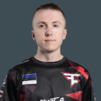

KARRIGAN - один из лучших представителей Дании в Counter-Strike 1.6 из последнего поколения игроков. В свое время был частью знаменитого коллектива Spirit of Amiga, более известного по сокращению SoA. Также успел поиграть за местные датские миксы, в том числе wooSai. В конце 2010 года присоединился к немецкому составу mousesports, где играл бок о бок с Tixo, Kapio и другими легендами немецкой сцены. В начале 2012 года пополнил ряды Fnatic, пребывание в которых стало лучшим отрезком в карьере датчанина. Тот состав Fnatic доминировал над всеми в конце эры CS 1.6 и отметился сверхагрессивным стилем игры.
С переходом на CS:GO Финн продолжительное время не мог подняться в европейский и мировой топ, играя за датские и немецкие коллективы, такие как Reason Gaming, n!faculty и те же fnatic. В начале 2014 года был приглашен в состав Team Dignitas, где на капитанской позиции сменил FeTiSh'a и помог коллективу войти в топ-5 лучших мировых коллективов. С тех пор играет в одном составе с такими игроками, как device, dupreeh, Xyp9x, cajunb и находится в отличных дружеских отношениях с ними. В начале 2016 года Финн и его напарники по ex-TSM заручились спонсорской поддержкой и стали началом новой организации Astralis. В игре выполняет роль



Karrigan
Rain
Frozen
Broky
Ropz